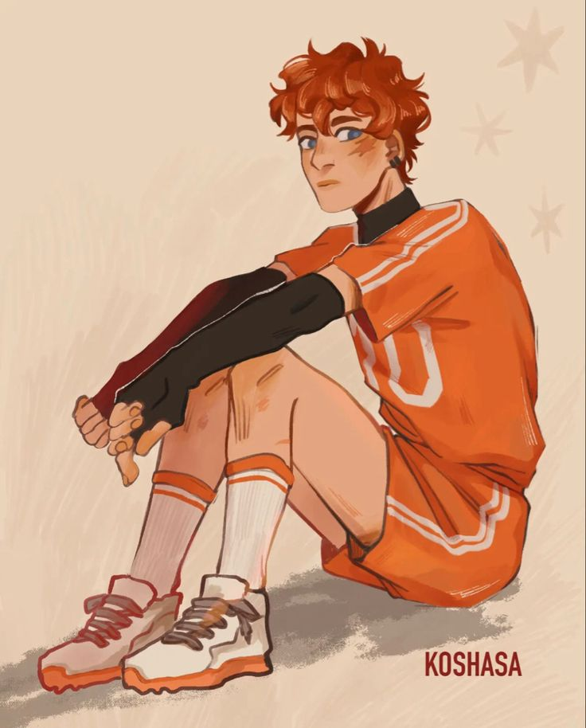
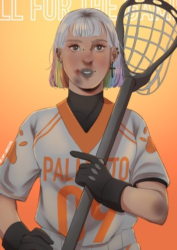
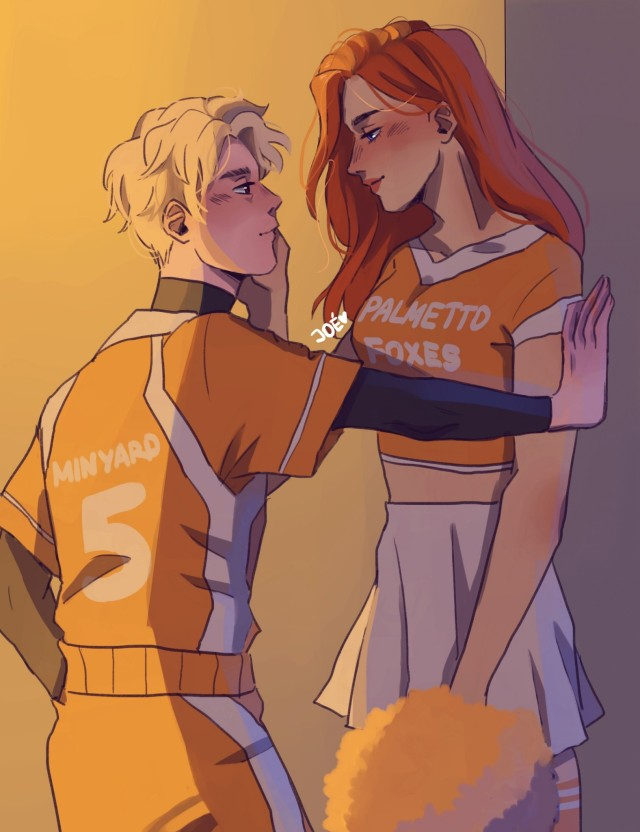

| aftg |
| Personajes |
Fan Art |
informacion |
| Neil Josten |
 |
The main character of the series. Exhausted from a life on the run, Neil has to adjust to being a Fox. Due to his equally damaged teammates and his newfound appearance in the spotlight, he finds himself in conflict with his urge to stay hidden and isolated. In the end, his love for Exy is greater than the fear of his father. |
| Andrew Minyard |
 |
Is a sophomore Criminal Justice major at Palmetto State University, and a goalie for the PSU Foxes Exy team. He is known for his ferocity both on and off the court - a trait attributed to him by his unstable upbringing in the foster care system, stint in a juvenile detention center, and mania induced by his court-issued anti-depressants.
He is dedicated to upholding a strict set of personal values and is wholly protective of the the people he cares for — his twin Aaron, his cousin Nicky, and a few others that he deems worthwhile. Despite these sentiments, he outwardly appears to have little to no regard for his own life. All for the Game follows the journey of his drastic growth and development alongside that of Neil's. |
| Kevin Day |
 |
Is the starting striker of the Palmetto State Foxes. He was originally a member of the Edgar Allan Ravens and was considered one of the best contemporary Exy players alongside his adoptive brother Riko Moriyama until an injury to his dominant hand forced to relearn to play with his right hand. |
| Renee Walker |
 |
Is a goaltender for the Palmetto State Foxes. Her hair is chin length and the last 2 inches are coloured in alternating pastel colours. She uses scant make-up and dresses conservatively. She wears a silver cross necklace. |
| Aaron Minyard |
 |
Andrew's twin brother, often referred to as "the normal one". Aaron attends Palmetto State University and plays Exy as a backliner alongside Matt. Aaron has a bad relationship with everyone else but Katelyn, his forbidden girlfriend and a cheerleader for the Vixens. |
|
|